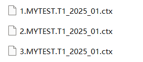

1. The directory containing files of this external library is: installation directory\esProc\extlib\HdfsFileCli. The Raqsoft core jar for this external library is scu-hdfsFile-cli-2.10.jar.
commons-cli-1.2.jar
commons-collections-3.2.2.jar
commons-configuration2-2.1.1.jar
commons-lang3-3.7.jar
guava-11.0.2.jar
hadoop-auth-3.2.0.jar
hadoop-client-runtime-3.2.0.jar
hadoop-common-3.2.0.jar
hadoop-hdfs-3.2.0.jar
hadoop-mapreduce-client-core-3.2.0.jar
hadoop-mapreduce-client-jobclient-3.2.0.jar
htrace-core4-4.1.0.jar
log4j-1.2.17.jar
protobuf-java-2.5.0.jar
slf4j-api-1.7.25.jar
slf4j-log4j12-1.7.25.jar
stax2-api-3.1.4.jar
woodstox-core-5.0.3.jar
Note: The third-party jars are encapsulated in the compression package and users can choose appropriate ones for specific scenarios..
·The following two jars are also needed for Hadoop2.8.3 version:
hadoop-hdfs-client-2.8.3.jar
htrace-core4-4.0.1-incubating.jar
·The following 5 jars are also needed for Hadoop 3.2.0 version:
hadoop-client-runtime-3.2.0
hadoop-hdfs-client-3.2.0.jar
htrace-core4-4.1.0-incubating.jar
stax2-api-3.1.4.jar
woodstox-core-5.0.3.jar
Besides, use commons-configuration2-2.1.1.jar to replace commons-configuration-1.6.jar in a lower version.
2. Download the following four files from the web and place them in installation directory\bin:
hadoop.dll
hadoop.lib
libwinutils.lib
winutils.exe
Note: The above files are required under Windows environment, but not under Linux. There are x86 winutils.exe and x64 winutils.exe depending on different OS versions.
3. A JRE version 1.7 or above is required. Users need to install a higher version if the esProc built-in JRE version does not meet the requirements, and then configure java_home in config.txt under installation directory \esProc\bin. Just skip this step if the JRE version is adequate.
4. Users can manually change the size of memory if the default size isn��t large enough for needs. Under Windows, make the change in config.txt when starting esProc through .exe file; and in .bat file when starting the application through the .bat file. Make the modification in .sh file under Linux.
To modify the config.txt file under Windows:
java_home=C:\ProgramFiles\Java\JDK1.7.0_11;esproc_port=48773;btx_port=41735;gtm_port=41737;jvm_args=-Xms256m -XX:PermSize=256M -XX:MaxPermSize=512M -Xmx9783m -Duser.language=zh
5. On the machine where esProc is installed, find the hosts file to add the IP address and hostname of the machine holding the HDFS file system. For example, if the IP address and hostname are 192.168.0.8 and masters respectively, here are the settings:

6. esProc provides a number of functions, including hdfs_open(), hdfs_close(), hdfs_file(), hdfs_dir(), hdfs_exists(), hdfs_upload(), hdfs_download() and so on, to access the HDFS file system. Look them up in��Help��-��Function reference��to find their uses.